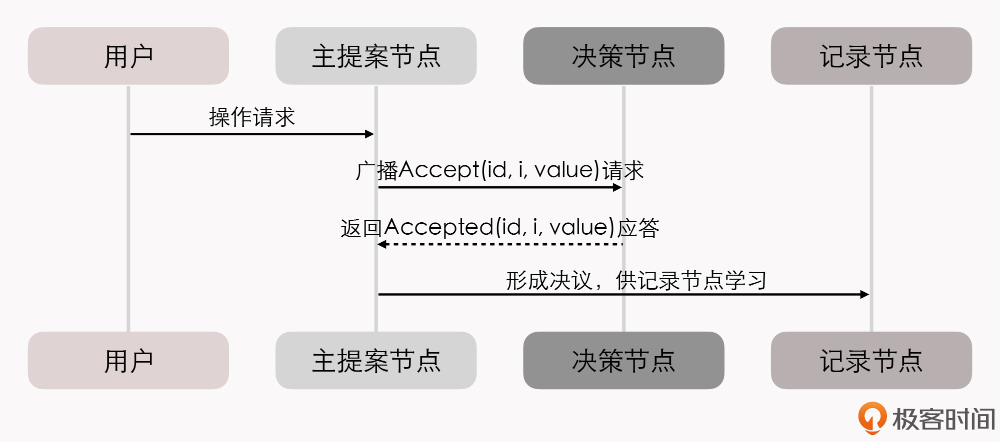
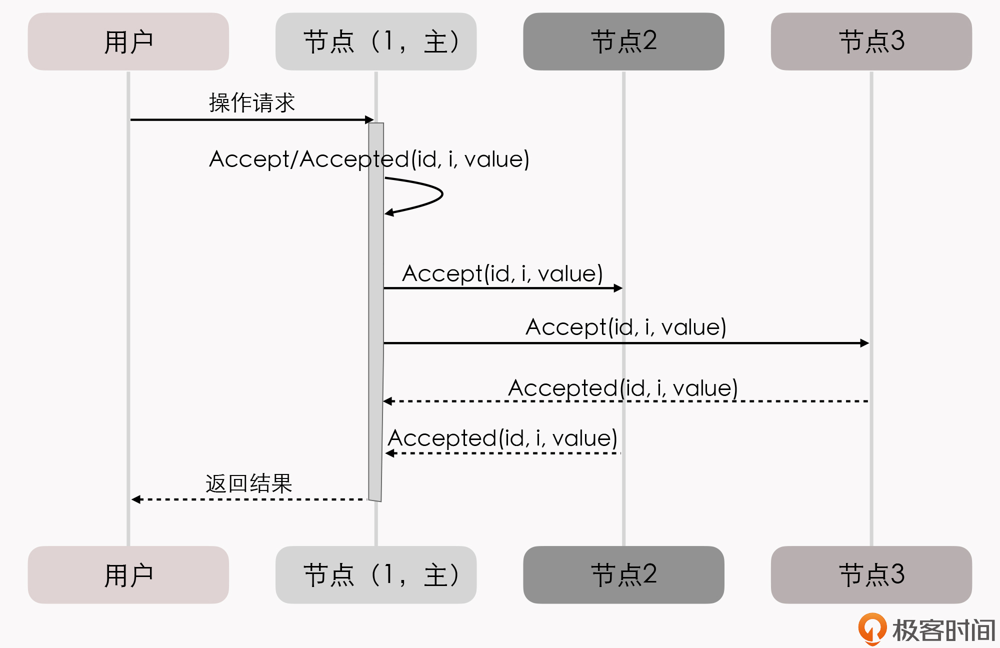
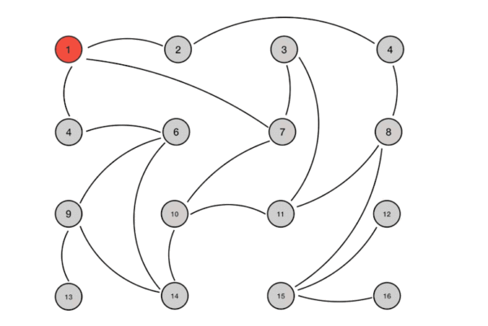

- 00 _导读 _ 什么是“The Fenix Project”？.md.html
- 00 开篇词 _ 如何构建一个可靠的分布式系统？.md.html
- 01 _ 原始分布式时代：Unix设计哲学下的服务探索.md.html
- 02 _ 单体系统时代：应用最广泛的架构风格.md.html
- 03 _ SOA时代：成功理论与失败实践.md.html
- 04 _ 微服务时代：SOA的革命者.md.html
- 05 _ 后微服务时代：跨越软件与硬件之间的界限.md.html
- 06 _ 无服务时代：“不分布式”云端系统的起点.md.html
- 07 _ 远程服务调用（上）：从本地方法到远程方法的桥梁.md.html
- 08 _ 远程服务调用（下）：如何选择适合自己的RPC框架？.md.html
- 09 _ RESTful服务（上）：从面向过程编程到面向资源编程.md.html
- 10 _ RESTful服务（下）：如何评价服务是否RESTful？.md.html
- 11 _ 本地事务如何实现原子性和持久性？.md.html
- 12 _ 本地事务如何实现隔离性？.md.html
- 13 _ 全局事务和共享事务是如何实现的？.md.html
- 14 _ 分布式事务之可靠消息队列.md.html
- 15 _ 分布式事务之TCC与SAGA.md.html
- 16 _ 域名解析系统，优化HTTP性能的第一步.md.html
- 17 _ 客户端缓存是如何帮助服务器分担流量的？.md.html
- 18 _ 传输链路，优化HTTP传输速度的小技巧.md.html
- 19 _ 如何利用内容分发网络来提高网络性能？.md.html
- 20 _ 常见的四层负载均衡的工作模式是怎样的？.md.html
- 21 _ 服务端缓存的三种属性.md.html
- 22 _ 分布式缓存如何与本地缓存配合，提高系统性能？.md.html
- 23 _ 认证：系统如何正确分辨操作用户的真实身份？.md.html
- 24 _ 授权（上）：系统如何确保授权的过程可靠？.md.html
- 25 _ 授权（下）：系统如何确保授权的结果可控？.md.html
- 26 _ 凭证：系统如何保证与用户之间的承诺是准确完整且不可抵赖的？.md.html
- 27 _ 保密：系统如何保证敏感数据无法被内外部人员窃取滥用？.md.html
- 28 _ 传输（上）：传输安全的基础，摘要、加密与签名.md.html
- 29 _ 传输（下）：数字证书与传输安全层.md.html
- 30 _ 验证：系统如何确保提交给服务的数据是安全的？.md.html
- 31 _ 分布式共识（上）：想用好分布式框架，先学会Paxos算法吧.md.html
- 32 _ 分布式共识（下）：Multi Paxos、Raft与Gossip，分布式领域的基石.md.html
- 33 _ 服务发现如何做到持续维护服务地址在动态运维中的时效性？.md.html
- 34 _ 路由凭什么作为微服务网关的基础职能？.md.html
- 35 _ 如何在客户端实现服务的负载均衡？.md.html
- 36 _ 面对程序故障，我们该做些什么？.md.html
- 37 _ 要实现某种容错策略，我们该怎么做？.md.html
- 38 _ 限流的目标与模式.md.html
- 39 _ 如何构建零信任网络安全？.md.html
- 40 _ 如何实现零信任网络下安全的服务访问？.md.html
- 41 _ 分布式架构中的可观测到底说的是什么？.md.html
- 42 _ 分析日志真的没那么简单.md.html
- 43 _ 一个完整的分布式追踪系统是什么样子的？.md.html
- 44 _ 聚合度量能给我们解决什么问题？.md.html
- 45 _ 模块导学：从微服务到云原生.md.html
- 46 _ 容器的崛起（上）：文件、访问、资源的隔离.md.html
- 47 _ 容器的崛起（下）：系统、应用、集群的封装.md.html
- 48 _ 以容器构建系统（上）：隔离与协作.md.html
- 49 _ 以容器构建系统（下）：韧性与弹性.md.html
- 50 _ 应用为中心的封装（上）：Kustomize与Helm.md.html
- 51 _ 应用为中心的封装（下）：Operator与OAM.md.html
- 52 _ Linux网络虚拟化（上）：信息是如何通过网络传输被另一个程序接收到的？.md.html
- 53 _ Linux网络虚拟化（下）：Docker所提供的容器通讯方案有哪些？.md.html
- 54 _ 容器网络与生态：与CNM竞争过后的CNI下的网络插件生态.md.html
- 55 _ 谈谈Kubernetes的存储设计理念.md.html
- 56 _ Kubernetes存储扩展架构：一个真实的存储系统如何接入或移除新存储设备？.md.html
- 57 _ Kubernetes存储生态系统：几种有代表性的CSI存储插件的实现.md.html
- 58 _ Kubernetes的资源模型与调度器设计.md.html
- 59 _ 透明通讯的涅槃（上）：通讯的成本.md.html
- 60 _ 透明通讯的涅槃（下）：控制平面与数据平面.md.html
- 61 _ 服务网格与生态：聊聊服务网格的两项标准规范.md.html
- 62 _ Fenix's Bookstore的前端工程.md.html
- 63 _ 基于Spring Boot的单体架构.md.html
- 64 _ 基于Spring Cloud的微服务架构.md.html
- 65 _ 基于Kubernetes的微服务架构.md.html
- 66 _ 基于Istio的服务网格架构.md.html
- 67 _ 基于云计算的无服务架构.md.html
- 春节特别放送（上）_ 有的放矢，事半功倍.md.html
- 春节特别放送（下）_ 积累沉淀，知行合一.md.html
- 用户故事 _ 詹应达：持续成长，不惧未来.md.html
- 结束语 _ 程序员之路.md.html
- 结课测试 _ 一套习题，测出你的掌握程度.md.html
- 捐赠
32 _ 分布式共识（下）：Multi Paxos、Raft与Gossip，分布式领域的基石
你好，我是周志明，这节课我们继续学习分布式共识算法。
在上节课的最后，我通过一个批准阶段重复失败例子，和你介绍了Basic Paxos的活锁问题，两个提案节点互不相让地提出自己的提案，抢占同一个值的修改权限，导致整个系统在持续性地“反复横跳”，从外部看就像是被锁住了。
同时，我还讲过一个观点，分布式共识的复杂性，主要来源于网络的不可靠、请求的可并发，这两大因素。活锁问题和许多Basic Paxos异常场景中所遭遇的麻烦，都可以看作是源于任何一个提案节点都能够完全平等地、与其他节点并发地提出提案而带来的复杂问题。
为此，Lamport专门设计（“专门设计”的意思是，在Paxos的论文中Lamport随意提了几句可以这么做）了一种Paxos的改进版本“Multi Paxos”算法，希望能够找到一种两全其美的办法：既不破坏Paxos中“众节点平等”的原则，又能在提案节点中实现主次之分，限制每个节点都有不受控的提案权利。
这两个目标听起来似乎是矛盾的，但现实世界中的选举，就很符合这种在平等节点中挑选意见领袖的情景。
Multi Paxos
Multi Paxos对Basic Paxos的核心改进是，增加了“选主”的过程：
- 提案节点会通过定时轮询（心跳），确定当前网络中的所有节点里是否存在一个主提案节点；
- 一旦没有发现主节点存在，节点就会在心跳超时后使用Basic Paxos中定义的准备、批准的两轮网络交互过程，向所有其他节点广播自己希望竞选主节点的请求，希望整个分布式系统对“由我作为主节点”这件事情协商达成一致共识；
- 如果得到了决策节点中多数派的批准，便宣告竞选成功。
当选主完成之后，除非主节点失联会发起重新竞选，否则就只有主节点本身才能够提出提案。此时，无论哪个提案节点接收到客户端的操作请求，都会将请求转发给主节点来完成提案，而主节点提案的时候，也就无需再次经过准备过程，因为可以视作是经过选举时的那一次准备之后，后续的提案都是对相同提案ID的一连串的批准过程。
我们也可以通俗地理解为：选主过后，就不会再有其他节点与它竞争，相当于是处于无并发的环境当中进行的有序操作，所以此时系统中要对某个值达成一致，只需要进行一次批准的交互即可。具体如下序列所示：

你可能会注意到，二元组(id, value)已经变成了三元组(id, i, value)，这是因为需要给主节点增加一个“任期编号”，这个编号必须是严格单调递增的，以应付主节点陷入网络分区后重新恢复，但另外一部分节点仍然有多数派，且已经完成了重新选主的情况，此时必须以任期编号大的主节点为准。
从整体来看，当节点有了选主机制的支持后，就可以进一步简化节点角色，不必区分提案节点、决策节点和记录节点了，可以统称为“节点”，节点只有主（Leader）和从（Follower）的区别。此时的协商共识的时序图如下：

在这个理解的基础上，我们换一个角度来重新思考“分布式系统中如何对某个值达成一致”这个问题，可以把它分为下面三个子问题来考虑：
- 如何选主（Leader Election）
- 如何把数据复制到各个节点上（Entity Replication）
- 如何保证过程是安全的（Safety）
可以证明（具体证明就不列在这里了，感兴趣的读者可参考结尾给出的论文），当这三个问题同时被解决时，就等价于达成共识。
接下来，我们分别看下这三个子问题如何解决。
关于“如何选主”，虽然选主问题会涉及到许多工程上的细节，比如心跳、随机超时、并行竞选等，但从原理上来说，只要你能够理解Paxos算法的操作步骤，就不会有啥问题了。因为，选主问题的本质，仅仅是分布式系统对“谁来当主节点”这件事情的达成的共识而已。我们上节课，其实就已经解决了“分布式系统该如何对一件事情达成共识”这个问题。
我们继续来解决数据（Paxos中的提案、Raft中的日志）在网络各节点间的复制问题。
在正常情况下，当客户端向主节点发起一个操作请求后，比如提出“将某个值设置为X”，数据复制的过程为：
- 主节点将X写入自己的变更日志，但先不提交，接着把变更X的信息在下一次心跳包中广播给所有的从节点，并要求从节点回复“确认收到”的消息；
- 从节点收到信息后，将操作写入自己的变更日志，然后给主节点发送“确认签收”的消息；
- 主节点收到过半数的签收消息后，提交自己的变更、应答客户端并且给从节点广播“可以提交”的消息；
- 从节点收到提交消息后提交自己的变更，数据在节点间的复制宣告完成。
那异常情况下的数据复制问题怎么解决呢？
网络出现了分区，部分节点失联，但只要仍能正常工作的节点数量能够满足多数派（过半数）的要求，分布式系统就仍然可以正常工作。假设有S1、S2、S3、S4和S5共5个节点，我们来看下数据复制过程。
假设由于网络故障，形成了S1、S2和S3、S4、S5两个分区。
一段时间后，S3、S4、S5三个节点中的某一个节点比如S3，最先达到心跳超时的阈值，获知当前分区中已经不存在主节点了；于是，S3向所有节点发出自己要竞选的广播，并收到了S4、S5节点的批准响应，加上自己一共三票，竞选成功。此时，系统中同时存在S1和S3两个主节点，但由于网络分区，它们都不知道对方的存在。
这种情况下，客户端发起操作请求的话，可能出现这么两种情况：
第一种，如果客户端连接到了S1、S2中的一个，都将由S1处理，但由于操作只能获得最多两个节点的响应，无法构成多数派的批准，所以任何变更都无法成功提交。
第二种，如果客户端连接到了S3、S4、S5中的一个，都将由S3处理，此时操作可以获得最多三个节点的响应，构成多数派的批准，变更就是有效的可以被提交，也就是说系统可以继续提供服务。
事实上，这两种“如果”的场景同时出现的机会非常少。为什么呢？网络分区是由软、硬件或者网络故障引起的，内部网络出现了分区，但两个分区都能和外部网络的客户端正常通讯的情况，极为少见。更多的场景是，算法能容忍网络里下线了一部分节点，针对咱们这个例子来说，如果下线了两个节点系统可以正常工作，但下线了三个节点的话，剩余的两个节点也不可能继续提供服务了。
- 假设现在故障恢复，分区解除，五个节点可以重新通讯了：
- S1和S3都向所有节点发送心跳包，从它们的心跳中可以得知S3的任期编号更大、是最新的，所以五个节点均只承认S3是唯一的主节点。
- S1、S2回滚它们所有未被提交的变更。
- S1、S2从主节点发送的心跳包中获得它们失联期间发生的所有变更，将变更提交写入本地磁盘。
- 此时分布式系统各节点的状态达成最终一致。
到这里，第二个问题“数据在网络节点间的复制问题”也就解决了。我们继续看第三个问题，如何保证过程是安全的。
你可能要说了，选主和数据复制这两个问题都是很具体的行为，但“安全”这个表述很模糊啊，怎么判断什么是安全或者不安全呢？
要想搞明白这个问题，我们需要先看下Safety和Liveness这两个术语。
在专业资料中，Safety和Liveness通常会被翻译为“协定性”和“终止性”。它们也是由Lamport最先提出的，定义是：
- 协定性（Safety）：所有的坏事都不会发生（Something “bad” will never happen）。
- 终止性（Liveness）：所有的好事都终将发生，但不知道是啥时候（Something “good” will must happen, but we don’t know when）。
这种就算解释了你也看不明白的定义，是不是很符合Lamport老爷子一贯的写作风格？（我也是无奈地摊手苦笑）。不过没关系，我们不用去纠结严谨的定义，可以通过例子来理解它们的具体含义。
还是以选主问题为例，Safety保证了选主的结果一定是有且只有唯一的一个主节点，不可能同时出现两个主节点；而Liveness则要保证选主过程是一定可以在某个时刻能够结束的。
我们再回想一下活锁的内容的话，可以发现，在Liveness这个属性上，选主问题是存在理论上的瑕疵的，可能会由于活锁而导致一直无法选出明确的主节点。所以，Raft论文中只写了对Safety的保证，但由于工程实现上的处理，现实中是几乎不可能会出现终止性的问题。
最后，以上这种把共识问题分解为“Leader Election”、“Entity Replication”和“Safety”三个问题来思考、解决的解题思路，就是咱们这一节标题中的“Raft算法”。
《一种可以让人理解的共识算法》（In Search of an Understandable Consensus Algorithm）这篇论文提出了Raft算法，并获得了USENIX ATC 2014大会的Best Paper，更是成为了日后etcd、LogCabin、Consul等重要分布式程序的实现基础。ZooKeeper的ZAB算法和Raft的思路也非常类似，这些算法都被认为是与Multi Paxos的等价派生实现。
Gossip协议
Paxos、Raft、ZAB等分布式算法经常会被称作是“强一致性”的分布式共识协议，其实这样的描述扣细节概念的话是很别扭的，会有语病嫌疑，但我们都明白它的意思其实是在说“尽管系统内部节点可以存在不一致的状态，但从系统外部看来，不一致的情况并不会被观察到，所以整体上看系统是强一致性的”。
与它们相对的，还有另一类被冠以“最终一致性”的分布式共识协议，这表明系统中不一致的状态有可能会在一定时间内被外部直接观察到。
一种典型而且非常常见的最终一致的分布式系统，就是DNS系统，在各节点缓存的TTL到期之前，都有可能与真实的域名翻译结果存在不一致。
还有一种很有代表性的“最终一致性”的分布式共识协议，那就是Gossip协议。Gossip协议，主要应用在比特币网络和许多重要的分布式框架（比如Consul的跨数据中心同步）中。
Gossip最早是由施乐公司 Palo Alto研究中心在论文“Epidemic Algorithms for Replicated Database Maintenance”中提出的，是一种用于分布式数据库在多节点间复制同步数据的算法。
扩展：施乐公司（Xerox），现在可能很多人不了解施乐了，或只把施乐当一家复印产品公司看待。其实，施乐是计算机许多关键技术的鼻祖，是图形界面的发明者、以太网的发明者、激光打印机的发明者、MVC架构的提出者、RPC的提出者、BMP格式的提出者……
从论文题目中可以看出，最初它是被称作“流行病算法”（Epidemic Algorithm）的，但因为不太雅观，Gossip这个名字会更普遍。另外，你可能还会听到有人把它叫做“流言算法”“八卦算法”“瘟疫算法”等。其实，这些名字都是很形象化的描述，反映了Gossip的特点：要同步的信息如同流言一般传播、病毒一般扩散。
按照习惯，我也会把Gossip叫做“共识协议”，但首先必须强调它所解决的问题并不是直接与Paxos、Raft这些共识算法等价的，只是基于Gossip之上可以通过某些方法去实现与Paxos、Raft相类似的目标而已。
一个最典型的例子是，比特币网络中使用到了Gossip协议，用来在各个分布式节点中互相同步区块头和区块体的信息。这是整个网络能够正常交换信息的基础，但并不能称作共识。比特币使用工作量证明（Proof of Work，PoW），来对“这个区块由谁来记账”这一件事儿在全网达成共识。这个目标才可以认为与Paxos、Raft的目标是一致的。
接下来，我们一起学习下Gossip的具体工作过程。其实，和Paxos、Raft等算法相比，Gossip的过程可以说是十分简单了，可以看作是两个步骤的简单循环：
- 如果有某一项信息需要在整个网络中的所有节点中传播，那从信息源开始，选择一个固定的传播周期（比如1秒），随机选择与它相连接的k个节点（称为Fan-Out）来传播消息。
- 如果一个节点收到消息后发现这条消息之前没有收到过，就会在下一个周期内，把这条消息发送给除了给它发消息的那个节点之外的相邻的k个节点，直到网络中所有节点都收到了这条消息。尽管这个过程需要一定的时间，但理论上网络的所有节点最终都会拥有相同的消息。
Gossip传播过程的示意图如下所示：

根据示意图和Gossip的过程描述，我们很容易发现，Gossip对网络节点的连通性和稳定性几乎没有任何要求，表现在两个方面：
- 它一开始就将某些节点只能与一部分节点部分连通（Partially Connected Network）而不是全连通网络（Fully Connected Network）作为前提；
- 能够容忍网络上节点的随意地增加或者减少、随意地宕机或者重启，新增加或者重启的节点的状态，最终会与其他节点同步达成一致。
也就是说，Gossip把网络上所有节点都视为平等而普通的一员，没有中心化节点或者主节点的概念。这些特点使得Gossip具有极强的鲁棒性，而且非常适合在公众互联网（WAN）中应用。
同时，我们也很容易发现Gossip协议有两个缺点。
第一个缺点是，消息是通过多个轮次的散播而到达全网的，因此必然会存在各节点状态不一致的情况。而且，因为是随机选取的发送消息的节点，所以尽管可以在整体上测算出统计学意义上的传播速率，但我们还是没办法准确估计出单条消息的传播，需要多久才能达成全网一致。
第二个缺点是消息的冗余。这也是因为随机选取发送消息的节点，会不可避免地存在消息重复发送给同一节点的情况。这种冗余会增加网络的传输压力，也会给消息节点带来额外的处理负载。
达到一致性耗费的时间与网络传播中消息冗余量这两个缺点存在一定的对立关系，如果要改善其中一个，就会恶化另外一个。由此，Gossip传播消息时，有两种可能的方式：反熵（Anti-Entropy）和传谣（Rumor-Mongering）。这两个名字听起来都挺文艺的，我们具体分析下。
熵（Entropy）这个概念，在生活中很少见，但在科学中却很常用，它代表的是事物的混乱程度。反熵就是反混乱的意思，它把提升网络各个节点之间的相似度作为目标。
所以，在反熵模式下，为了达成全网各节点的完全一致的目标，会同步节点的全部数据，来消除各节点之间的差异。但是，在节点本身就会发生变动的前提下，这个目标将使得整个网络中消息的数量非常庞大，给网络带来巨大的传输开销。
而传谣模式是以传播消息为目标，仅仅发送新到达节点的数据，即只对外发送变更信息，这样消息数据量将显著缩减，网络开销也相对较小。
小结
对于普通开发者来说，分布式共识算法这两讲的内容理解起来还是有些困难的，因为算法更接近研究而不是研发的范畴。
但是，理解Paxos算法对深入理解许多分布式工具，比如HDFS、ZooKeeper、etcd、Consul等的工作原理，是无可回避的基础。虽然Paxos不直接应用于工业界，但它的变体算法，比如我们今天学习的Multi Paxos、Raft算法，以及今天我们没有提到的ZAB等算法，都是分布式领域中的基石。
一课一思
结合自己了解的某一款分布式框架，你可以总结下共识算法具体在其中解决了什么问题吗？
欢迎在留言区分享你的思考和见解。如果你觉得有收获，也欢迎把今天的内容分享给更多的朋友。感谢你的阅读，我们下一讲再见。
© 2019 - 2023 Liangliang Lee. Powered by gin and hexo-theme-book.